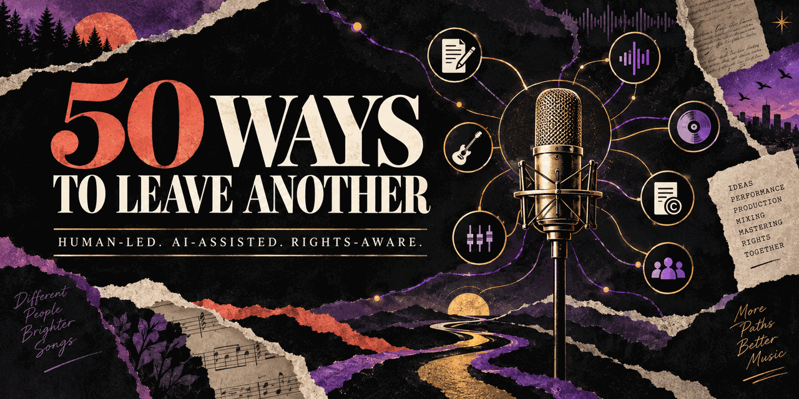

Production identity / Motion study 01
Loptr Lab cinematic title
Fifteen seconds. Five existing project identities. Prepared for “Rapid Fire Regret,” a Suno track by IBLoud_IVXX; load your audio below.



Loptr Lab
A Loptr Lab production
Original silent title tools
These optional tools are retained for title studies. The teaser export above embeds the recording in one MP4.
Your soundtrack. Your device.
Select the supplied “Rapid Fire Regret” recording once from Files → iCloud Drive → Downloads → ScreenRecording_11-15-2026 05-18-55_1.wav. WAV, M4A or MP3 stays in this browser’s memory; it is never uploaded or saved by this page. Commercial-use rights review remains pending.
No audio selected. Silent editorial timing.
15-second excerpt: 0.00–15.00 seconds.
Load a recording to derive cut timing from locally measured transients. Silent timing is an editorial preset, not an inferred beat.
Teaser export produces one MP4 with video and your selected recording embedded. No second upload or separate soundtrack is required.
Exact 15-second H.264/AAC MP4 with the existing local renderer
Static title frame. Motion plays only when requested.